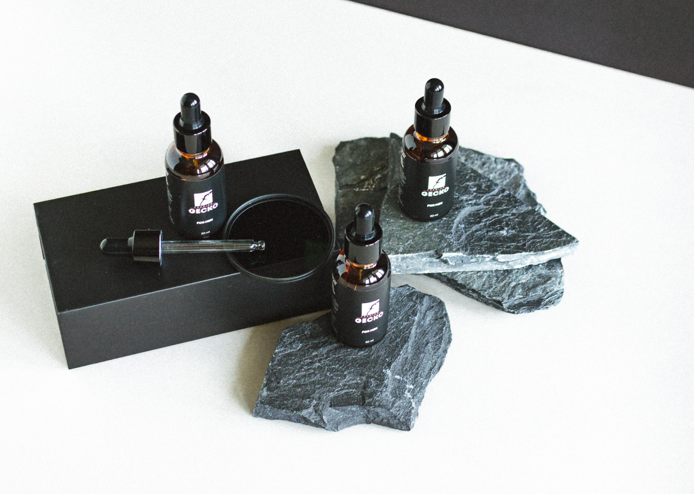

Смягчающее, увлажняющее, регенерирующее, восстанавливающее, разглаживающее морщины.
Всех типов кожи и возрастных категорий.
Кожи с нарушенным эпидермальным барьером.
Сухой, чувствительной, реактивной кожи.
Борьбы с морщинами, расширенными порами и неровным тоном.
Быстрого купирования раздражений, жжения и неприятных ощущений после бритья, обветривания, иных повреждений.
Является прекрасным основным домашним уходом, закрывая все потребности и особенности требовательной мужской кожи.
Уменьшение покраснений, воспалений кожи.
Устранение раздражения и гиперчувствительности кожи.
Качественное увлажнение, ровный тон и «здоровый» цвет лица.
Встряхнуть флакон перед применением.

Примечание:
На очищенную кожу лица нанести небольшое количество сыворотки. Лёгкими похлопывающими движениями равномерно распределить средство до полного впитывания.
Использовать 1-2 раза в день утром и (или) вечером. Не требует обязательного закрытия кремом. Продолжительность курса 3-4 месяца.
Хранить препараты в прохладном, темном месте.
При использовании не касаться пипеткой поверхности кожи.
В домашнем вечернем уходе сыворотку ANTI-AGE COMPLEX можно использовать как самостоятельное средство.
После вскрытия флакон хранится от 4 до 6 месяцев.
Все сыворотки прекрасно взаимодействуют между собой, дополняя друг друга.
В домашний уход могут назначаться сразу несколько продуктов компании.
Пример идеального протокола: на день - POLYGLUTAMIC ACID SERUM под крем, на ночь - ANTI AGE COMPLEX как самостоятельное средство.